In addition to validating geometry, Jennifer wants to validate attribute values. She’s particularly concerned about the DIAMETER attribute on the water network lines. Contractors sometimes forget to provide a diameter, leaving a value of zero. She doesn’t want to let them introduce this low-quality data into their system, so she would like the workflow to flag these features as invalid.
Jennifer is aware of many methods for validating attributes. She could use:
Because her need is very simple (validating a single attribute with known schema and values), she will simply use an AttributeManager and a Tester. However, if she decides to expand the validation later based on feedback, she might explore the other options.
Jennifer is ready to set up her attribute validation transformers. She adds an AttributeManager and connects it to both the GeometryValidator:Passed and GeometryValidator:Failed ports.
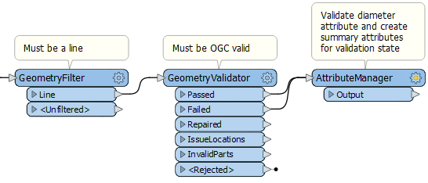
She could use the GeometryValidator to send her features in two different streams, but because the _issues{} attribute is only added to failed features, she can use that to distinguish which features have failed. Features that failed validation will have a value for the list attribute _issues{} at index 0 (i.e. the first item in the list), expressed in FME as _issues{0}. Keeping all her features in one stream will make summarizing them later easier.
She will use the AttributeManager to create two attributes that indicate if a given feature passes validation for diameter and if it is OGC valid. She can use Conditional Values to conduct tests to set the right value for each feature. She can then summarize her features by these attributes to provide a validation report to the submitter.
First, she will add the diameter validation attribute. She double-clicks the AttributeManager to open its parameters dialog. She scrolls down to the bottom of the Attribute Actions table and clicks in the cell that says <Add new Attribute>. She types in “diam_passed”. Then she right-clicks in the blank Attribute Value cell next to that and selects Conditional Values from the drop-down menu.
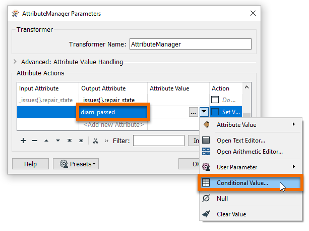
Jennifer will use Conditional Values to check if the diameter attribute is greater than zero. If it is, she will set the new attribute diam_passed to “Valid”; if it is not, she will set it to “Invalid”.
She double-clicks in the first empty cell under Test Condition to add a new test.
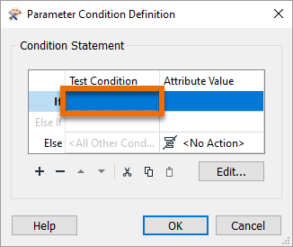
She sets Left Value to the attribute DIAMETER, the Operator to >, and the Right Value to 0. Then she sets Attribute Value at the bottom of the dialog to Valid.
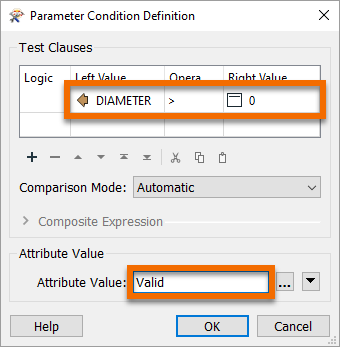
She clicks OK. Then she finds the empty cell in the Attribute Value column and the Else row and types in “Invalid”. If the DIAMETER is > 0, the diam_passed attribute is set to “Valid”, otherwise, it is set to “Invalid”.
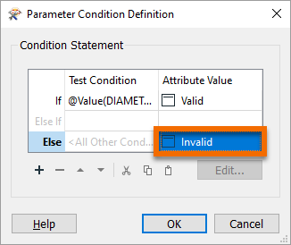
She clicks OK.
Next, she wants to create the attribute to capture if a feature is OGC valid or not. She can use the _issues{} attribute from the GeometryValidator for this task. She repeats this process for another new attribute in the AttributeManager: ogc_passed. She adds this new attribute under diam_passed in the AttributeManager table, then uses Conditional Values again to create a test condition:
|
Left Value |
_issues{0}.count |
|
Operator |
Attribute Has a Value |
|
Right Value |
<Unused> |
|
Attribute Value > Attribute Value |
Invalid |
Her dialog looks like this:
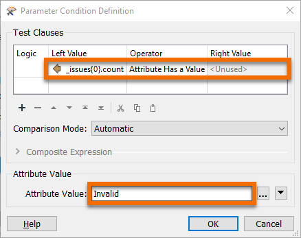
She clicks OK. Then she sets the Else value to “Valid”.
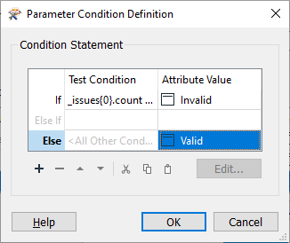
She clicks OK.
This test will set ogc_passed to “Invalid” if a feature has any values in the _issues{} list at index 0, or a value of “Valid” otherwise.
Finally, she wants to create a summary attribute that captures if a feature was invalid for either test. This attribute will be useful later in the workspace. She creates a new attribute called validation_result and uses Conditional Values to set up a test as follows:
|
Logic |
Left Value |
Operator |
Right Value |
|
diam_passed |
= |
Invalid |
|
|
OR |
ogc_passed |
= |
Invalid |
The Attribute Value for passing is “Invalid”. The value for Else is “Valid”. Her dialog looks like this:
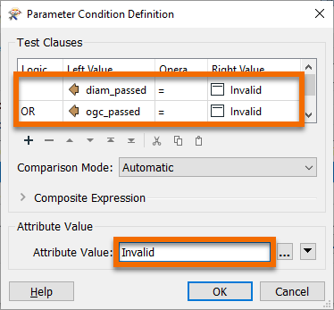
She clicks OK.
Jennifer would like the final report to tell the submitter the total number of features evaluated and the total number that were invalid. She needs attributes storing this information, which she can create using a Counter or a StatisticsCalculator transformer. She decides to use a StatisticsCalculator transformer because it will let her store the total number of features easily.
Jennifer adds two StatisticsCalculators: one after the GeometryFilter to count the total number of features evaluated and one after the AttributeManager to count the number of invalid features. She also makes an important adjustment, changing the feature connection line coming out of the StatisticsCalculator:Summary port to instead come out of the Complete port.
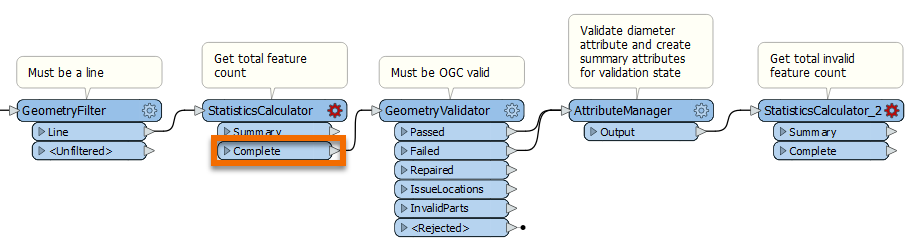
With this change, all the features will continue to flow through the workspace but will have the results of the StatisticsCalculator appended. The Summary port simply produces a small table of the results.
She opens the parameters for the first StatisticsCalculator and chooses the FEATURE_ID as the Attribute to analyze. She checks Total Count as the statistic to generate. Now when she runs the transformer, she’ll get the total count of all features passing through as a new attribute named FEATURE_ID.total_count.
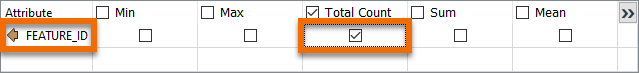
Because FEATURE_ID.total_count is not a very clear attribute name, Jennifer uses the AttributeManager to rename it to total_features. She opens the AttributeManager parameters, scrolls to the bottom of the table, finds FEATURE_ID.total_count, and renames it “total_features” in the Output Attribute column.
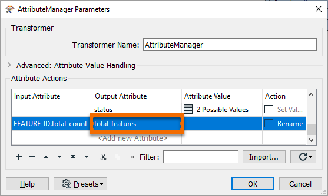
Next she sets up StatisticsCalculator_2. For this one, she calculates Total Count for FEATURE_ID and Max for total_features. She also sets Group By to validation_result. Using Group By will produce attributes with values of total valid and invalid features.
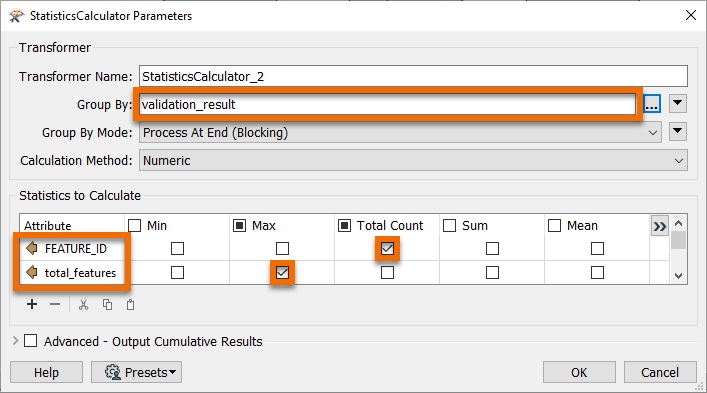
Jennifer uses Run to This on the StatisticsCalculator_2 and inspects the Summary port.
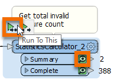
She sees a table with the total number of valid and invalid features. She can use this in the report back to the submitter.
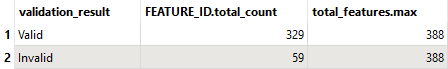
A final attribute validation step that Jennifer will take in the workspace is to filter her features based on the validation results. She already has an attribute that reflects that (validation_result), so she can use a Tester to stream her features based on if they were valid or invalid.
Jennifer connects a Tester to the StatisticsCalculator_2:Complete port.
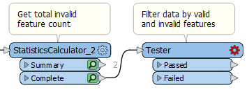
She sets the following test within it:
|
Logic |
Left Value |
Operator |
Right Value |
|
validation_result |
= |
Valid |
This test will cause valid features to come out of the Passed port and invalid features to come out the Failed port. She will use these failed features to create a detailed report for the submitter.
Make sure you have followed along with Jennifer’s steps. Repeat the steps above using your own installation of FME 2020.1, request an on-demand virtual machine in the footer link below, or use this interactive tutorial. If you have your own data you’d like to try to validate, you can create your own bad_data.dwg and good_data.dwg and try using those. Just keep in mind that you might need to use a different attribute to validate.